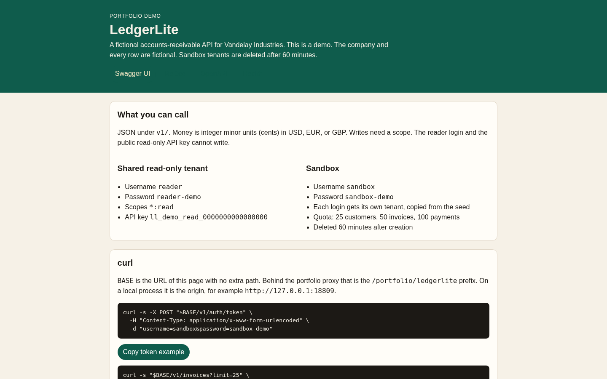
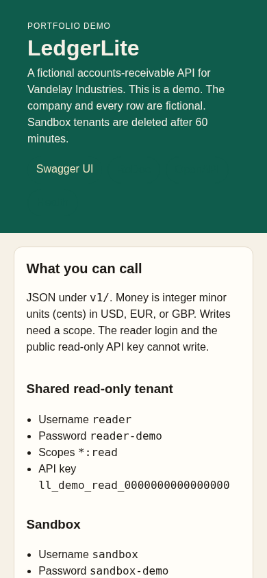
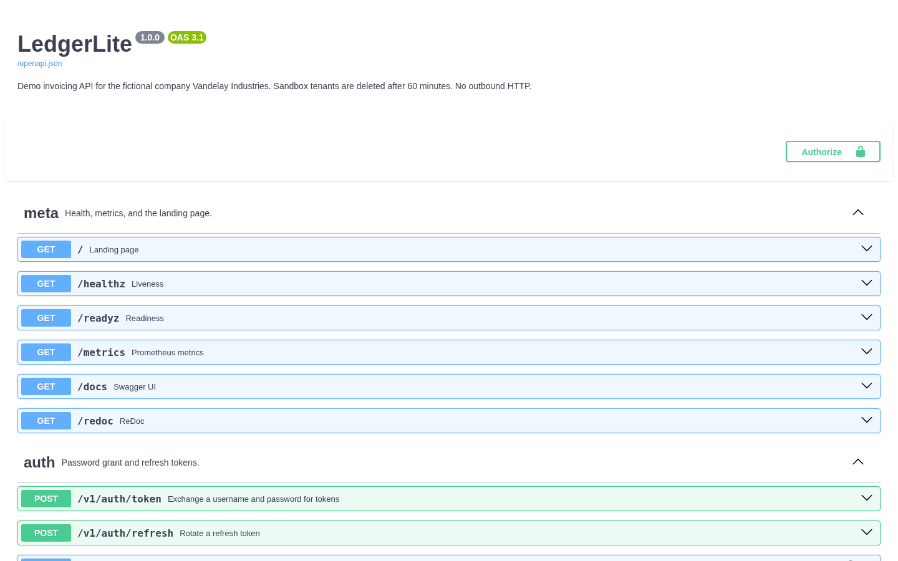

LedgerLite
Portfolio demo of an invoicing REST API. The company is Vandelay Industries. The company, the customers, and every amount are fictional. This is a demo. Sandbox tenants are deleted after 60 minutes.
Overview
LedgerLite is a small FastAPI service for accounts receivable: customers, invoices, payments, an event stream that is stored and never sent anywhere, and an aging report. Authentication is a password grant plus a hashed API key. Writes require a scope. The public reader login and the public read-only API key cannot write.
The live process listens on 127.0.0.1:18809 behind the portfolio nginx prefix /portfolio/ledgerlite/. SQLite is the database on that host. DATABASE_URL=postgresql+asyncpg://... is the switch for Postgres; the VPS image does not install that driver.
Problem → Solution → Result
Problem
- A read-only JSON feed does not show how an API product handles authentication, scopes, pagination, idempotent writes, or conflicting updates.
- Public demos still have to be safe to leave on the internet: fixed credentials, a body cap, rate limits, and no path that renders one user's data into another user's HTML.
Solution
- One FastAPI app with JWT access tokens, rotating refresh tokens, API keys, cursor pagination,
Idempotency-Key, andIf-Match. - A shared read-only tenant seeded from a fixed random stream, and a sandbox tenant created per login with quotas and a 60-minute lifetime.
- OpenAPI served by vendored Swagger UI and ReDoc. Nothing is loaded from a CDN.
Result
GET /healthzdoes not touch the database.GET /readyzrunsSELECT 1.GET /metricsis Prometheus text.- Reader calls that write return
403withapplication/problem+json. Sandbox calls that write return201until a quota is hit. pytestcovers auth, tenancy, pagination, filters, idempotency, concurrency, invoices, aging, rate limits, problems, the OpenAPI document, an in-process schemathesis pass over GET, migrations, and the seed. The landing page shows the recorded summary fromresults/test_report.json.
These are capabilities of this demo, not claims about a client engagement.
Features
- Password grant (
reader/reader-demo,sandbox/sandbox-demo) and API keyll_demo_read_0000000000000000. - Scopes, including
*:readfor the reader. Missing scope is403/problems/insufficient-scope. - Cursor pagination (
limit1–100) andLinkheaders that include the root path. - Idempotency keys on invoice create and payment create, kept for 24 hours.
If-Matchon customer and draft-invoice updates (428/412).- Invoice states
draft → open → paidanddraft|open → void. Tax isROUND_HALF_UPper line in minor units. - Aging buckets current, 1–30, 31–60, 61–90, and 90+, grouped by currency.
- In-process token buckets: 120/min authenticated, 30/min anonymous, 10/min on
POST /v1/auth/token. One uvicorn worker. More than one process should use Redis; this demo does not ship a Redis backend. - Body cap 32 KB (
413).X-Real-IPis trusted only when the TCP peer is127.0.0.1. - Sandboxes: 25 customers, 50 invoices, 100 payments, 60 minutes, at most 200 alive, cleanup every 5 minutes.
Architecture
Browser
|
| relative URLs on the landing page
v
edge nginx, prefix /portfolio/ledgerlite/ stripped
|
v
systemd: python -m app 127.0.0.1:18809
|
+--> SQLite DATA_DIR/ledgerlite.db
+--> signing key DATA_DIR/jwt.key (mode 0600, created on first use)docker-compose.yml is the shape for a local API plus an optional postgres:16 profile. The public demo does not run Compose.
API
| Method | Path | Scope |
|---|---|---|
| POST | /v1/auth/token | public password grant |
| POST | /v1/auth/refresh | public, rotates the refresh token |
| GET | /v1/me | any authenticated caller |
| GET/POST | /v1/customers | customers:read / customers:write |
| GET/PATCH/DELETE | /v1/customers/{id} | read / write; PATCH needs If-Match |
| GET | /v1/invoices and /v1/invoices.csv | invoices:read |
| POST | /v1/invoices | invoices:write and Idempotency-Key |
| POST | /v1/invoices/{id}/send and /void | invoices:write |
| POST | /v1/invoices/{id}/payments | payments:write and Idempotency-Key |
| GET | /v1/payments | invoices:read |
| GET | /v1/events | invoices:read |
| GET | /v1/reports/aging | reports:read |
Errors use RFC 9457 application/problem+json. Swagger UI is /docs. ReDoc is /redoc. Both load /openapi.json and the files under /static/vendor/ with the ROOT_PATH prefix when it is set. The password flow token URL is the relative path v1/auth/token.
Tests
cd ledgerlite
/home/box/.local/bin/python3.9 -m venv .venv
.venv/bin/pip install -r requirements.txt -r requirements-dev.txt
.venv/bin/python -m pytest -q --cov=app
.venv/bin/ruff check app tests
.venv/bin/python scripts/record_tests.pyPython 3.9 is the version the VPS runs. Annotations use Optional, List, and Dict so Pydantic and FastAPI can evaluate them on 3.9.
Deployment notes
deploy/ledgerlite.serviceruns asec2-user, binds127.0.0.1:18809, setsROOT_PATH=/portfolio/ledgerliteandDATA_DIR=/opt/portfolio/ledgerlite/data.ExecStartPremigrates (alembic upgrade head) and seeds only when the tenant table is empty.MemoryMax=150M,NoNewPrivileges,PrivateTmp,ProtectSystem=strict,ProtectHome,ReadWritePathslimited to the data directory.- The unit file does not contain a signing key. Set
LEDGERLITE_JWT_KEYor let the process createDATA_DIR/jwt.key. - Single worker. Rate limits live in process memory.
- On this demo host the TLS front end does not pass the client address, so the proxy sees one address and the per-IP buckets (anonymous 30/min, token 10/min) act as shared limits for all visitors; per-principal buckets (120/min) are unaffected.
./run.shmigrates, seeds if empty, and starts the same entrypoint.
Screenshots


